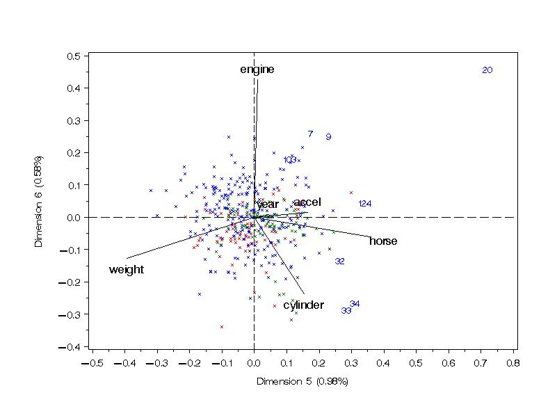
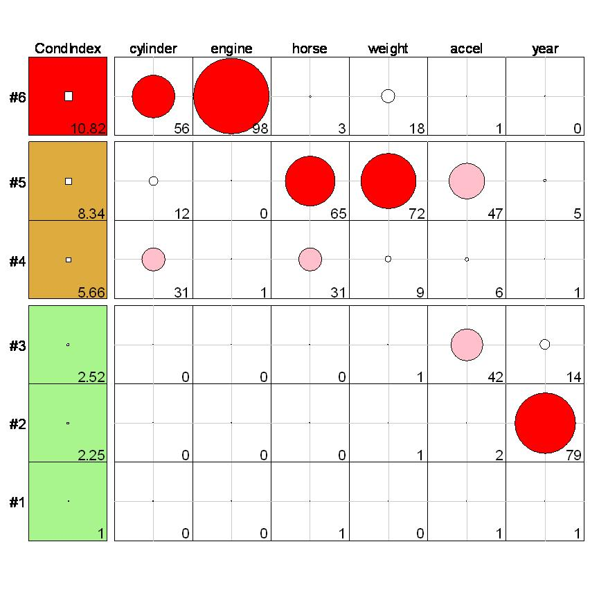

| Collinearity biplot | Tableplot |
|---|---|
 |
 |
This web page provides supplementary materials associated with the article, Where's Waldo: Visualizing Collinearity Diagnostics, Michael Friendly & Ernest Kwan, The American Statistician, 2009, 63(1), 56-65.
It provides the following: